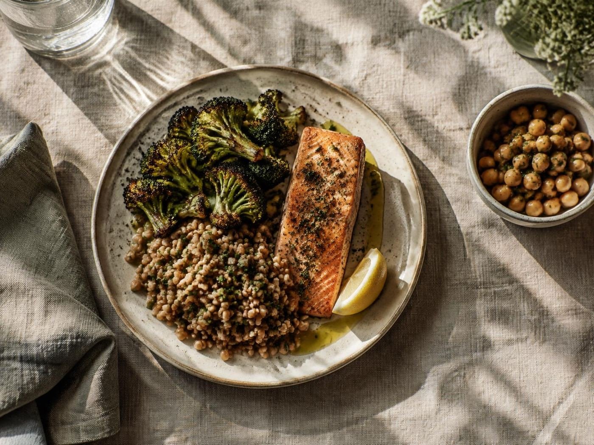

Evidence
A professional approach grounded in dietetic knowledge and health evidence.

Pam Finlay · Registered Dietitian
A professional perspective shaped by experience across weight management, mental health, diabetes and maternal health.
RD · Fellow of the Higher Education Academy · Member of the Royal Society for Public Health
About Pam
Nutrition and health are connected to people’s lives, circumstances and the support available to them.

Pam Finlay is a Registered Dietitian (RD), Fellow of the Higher Education Academy (FHEA) and Member of the Royal Society for Public Health (MRSPH). Her publicly documented dietetic experience includes weight management, mental health, diabetes and maternal health.
Explore professional background ↘A professional approach grounded in dietetic knowledge and health evidence.
An interest in learning, teaching and the wider dietetics community.
A perspective that connects nutrition with health and wellbeing.
Professional background
A snapshot of Pam’s publicly documented professional interests and contribution to nutrition conversations.
Pam appeared on The Dietitian Cafe podcast as Dietetic Clinical Lead at MoreLife UK, discussing nutrition and dietetics in fetal and maternal health.
Publicly documented experience includes weight management, mental health, diabetes and maternal health.
Her public profile includes FHEA credentials and activity connected with dietetics and nutrition education.
Key details supported by publicly available professional information.
The organization’s homepage reports this cumulative reach.
These are documented areas of professional experience, not a list of independently bookable services.
Hands-on experiences make nutrition knowledge practical, social, and grounded in familiar foodways.
Dietetic experience in weight management and nutrition-related support.
Explore this area ↗Experience at the intersection of nutrition, dietetics and mental health.
Explore this area ↗Publicly documented experience in diabetes and maternal health, including nutrition during pregnancy.
Explore this area ↗Pam holds the Fellow of the Higher Education Academy designation. Her public professional activity includes engagement with dietetics and nutrition education.
Training and professional development help health practitioners make nutrition conversations more relevant to the people they serve.
View LinkedIn profileSupport informed conversations about nutrition and health.
Stay connected with developments across dietetics and nutrition education.
Recognise the role of individual and wider circumstances in health.

Nutrition education can help people make sense of food, health and everyday choices. This section provides a general space for accessible learning and practical nutrition ideas.
Growing and preparing food can bring people closer to fresh ingredients, practical skills, and one another. Pam Finlay connects nutrition education with hands-on ways to engage with food.
A selection of professional content and learning themes connected with Pam’s publicly documented work.
Explore ideas and opportunities from Pam Finlay.
The Big Dietetic Debate: Maternal Health with Pam Finlay & Ro Huntriss.
Public engagement with students and the wider dietetics education community.
Explore the role of nutrition and dietetics in fetal and maternal health.
Follow Pam’s professional updates and activity.
A registered dietitian with professional interests spanning nutrition, health and education.
Meet the leadership behind Pam Finlay.
Registered Dietitian
Dietetic experience across weight management, mental health, diabetes and maternal health.
Professional designations
Registered Dietitian; Fellow of the Higher Education Academy; Member of the Royal Society for Public Health.
Connect on LinkedIn ↗Explore Pam’s professional profile and the public discussion around dietetics, education and maternal health.
Bring your time, resources, or support to community programs that make nutrition education more accessible.
Connect
For professional information and updates, visit Pam’s LinkedIn profile.
View LinkedIn profileListen to the podcast ↗Make your own palette
For clear contrast, pair a light page with dark text or a dark page with light text.